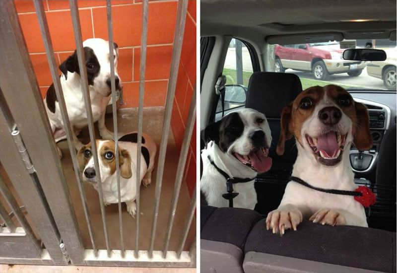
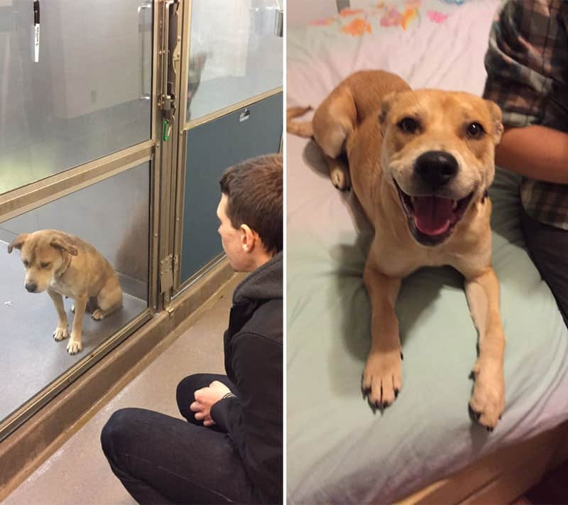
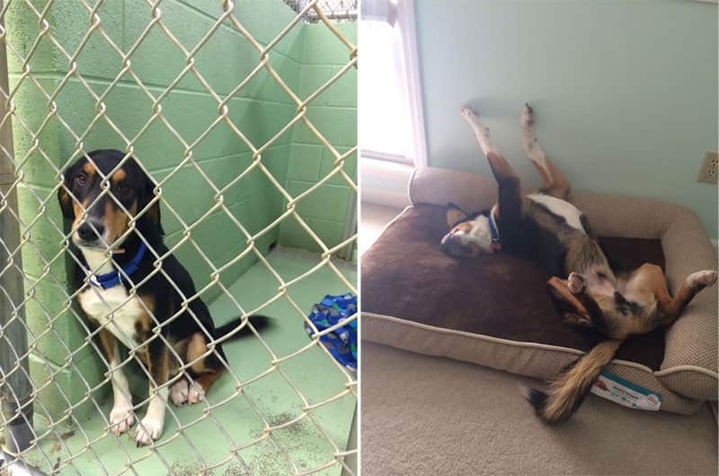
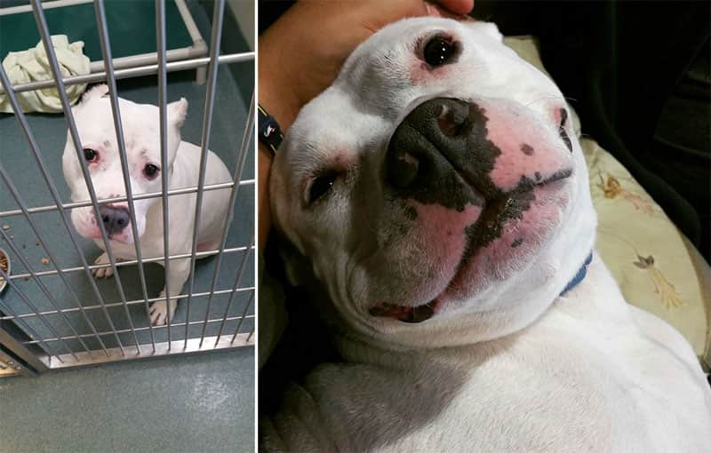

Ainda não é cadastrado?
Somos um site no qual você pode encontrar o seu melhor amigo com
alguns cliques.




Não temos fins lucrativos, e por isso aceitamos todo tipo de doação
que você puder fazer para nos ajudar. Clicando na aba "ajude", você
pode obter mais informações sobre como realizar doações.O site foi criado pensando na problemática das ONGs divulgarem seus animais e fazerem campanhas de adoção. Observando essa necessidade, foi criado o "Patinhas Felizes", onde diversas ONGs podem se cadastrar e mostrar os pets que possuem disponíveis para que você possa adotar!